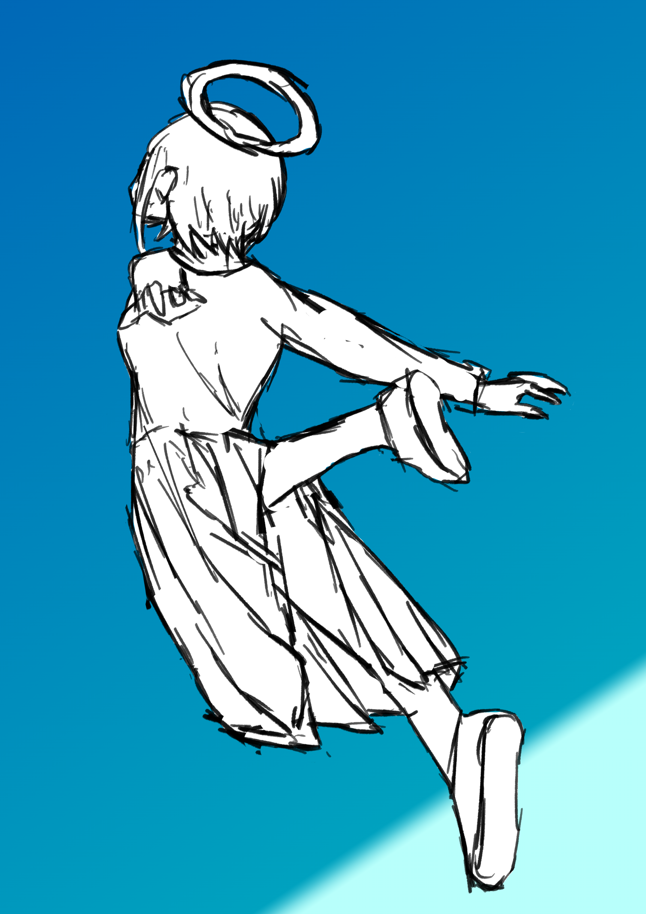

こんにちは、ザクザク食感です。
薬によってもたらされていた世界の拡張が終わった気がする。
これは絶望しているのではなく、もう健常に見える世界と同じところまで広がり切ってしまったと感じた。
ここから先は外付けの要因ではなく、自分の力でなければ世界が広がらない気がする。人生が始まった……
ここ一か月くらいまともにブログを書けていない。絵も描けていない。なんならツイッターもあまりできていない。
ブログをまとめた本をつくったとき、本当に鬱だった時期をブログに残せていなかったことを後悔したのに、今回も本当に世界が広がっている時期をブログに残せなかった。
人生に正負関わらず強い加速感があるとき、僕は案外インターネットから離れてしまうのかもしれない。自認ではインターネットにどっぷりなのに……
「インターネットをしないということは、その人が孤独でないという証拠である」と太宰治も言っていた
ブログは書けていないが、書くことはたくさんある。後でブログにまとめようと思ってメモに残したこともそこそこある。
今後僕がどうなるかわからないが、もうそれらを一つずつ文字にすることはないだろうなと思う。モチベがないというか、感情の過渡期が過ぎ去ってしまったので、そのとき感じたままの気持ちを残すことができないと思う。
なので、せめて後で振り返られるように、当時のことを思い出しながらメモしていたことをここに残しておこうと思う。
4/26
歴の長い友人から「人と話をしなさすぎておかしくなってきたので何かお話をしませんか？」と連絡が来たので遊んだ。
友人は最近悩み事が増えたようだった。今までオタクの友達とコンテンツの話ばかりしていたのに、みんな恋愛をしたりしていることが信じられないと言っていた。話を聞く限り、周りが急に変わったというよりは友人自身がそういったことに興味を持ち始めて、急に周囲の人間の見え方が変わったといった感じだと思う。
友人は、創作人間なので他人の構成要素をその人の創作物でしか推し量れないと言っていた。逆に自分の創作物以外の自分自身への評価を上手く受け取ることができないと言っていた。
傍から見てそんな風には見えなかったが、自己肯定が上手くできないことに悩んでいた。自分の内面に迫ろうとする人がいても、自分が見てきたコンテンツよりも自分が面白いと思えないから意味が分からないと言っていた。その分、創作には自分が良いと思うものを詰めこむことができているので、それを褒められることが自分を肯定する手段だと言っていた。その延長で、他人のこともその人の創作物でしか推し量ることができないと言っていた。
友人が「PERFECT DAYS」という映画をおすすめしてくれた。
見てほしいから概要だけ話すね、と言ってあらすじを教えてくれた。
と言ってもあらすじらしいあらすじはなくて、トイレ清掃員をしている主人公の日常をただ坦々と映しているだけの映画だと言っていた。
友人はその映画を見て、ただ人の人生を描いているだけなのに面白いと感じたらしい。そこから転じて、自分のありのままの生き方であっても面白いと受け入れてくれる人がいるのかもしれないという安堵を感じたらしい。それをきっかけに自己承認ができるかもしれないと思ったと言っていた。
素敵な感受性だと思った。僕が同じ状況にあったとして、ただ人の営みを描いている作品から同じことを受け取れるとは思えない。見習いたいと思った。
帰宅してすぐにPERFECT DAYSを見た。友人が言っていた通り、本当にただ清掃員の生活を映しているだけの作品だった。
主人公の生活はとても簡素だけど充実したもので、いわゆる丁寧な暮らしのようなものだった。
早起きして植物に水をやって、まじめに仕事をこなして居酒屋でご飯を食べて、本を読みながら寝て……を繰り返す生活があって、その中にある些細な変化を楽しみながら生きていた。なんでもない日々も欲望に支配されない清い心があれば美しく見えるんだな～と感じた。友人のようなユニークな良い感想が浮かぶほどの感受性は僕にはなかった……
5/13
僕は理屈を知覚できない心の動きに振り回されているのに、僕の周りの人は僕の存在や言動が起こしてしまったもっと心の深い部分の揺れ動きで変わっていってしまっているような気がして怖い
僕のせいで僕の周りの人たちが変わっていくのが怖い！僕だけが僕自身に踊らされている……
僕が自分を愛せなかった、自分への評価を低くして苦しさから逃げていた代償が今になって襲ってきた
5/14
4年前に見たゴミのような人間のゴミのような二次創作にかけられた呪いがようやく解けた
二次創作で自己表現をする気持ちは理解できるし、作り手のバイアスがかかるので仕方ないものだと思うが、許せない。自分のことを棚に上げているわけではない。
キャラクターを自分を慰めるために使うな これはゲームじゃない 人間なんだぞ！
自分の言葉は自分で喋れよ 自分の思想をひけらかしたいなら発信する責任を持てよ
なんて美しい曲なんだ
5/14（2）
なんですぐ謝るの？謝らなくていいのに
僕は自分だったら迷惑だと感じたから謝った
自分がされて嬉しい、されて悲しいという考え方でしか人と接さないのは、誠意はあってもそれぞれの人に向き合っているわけではないと思う
結局僕は人を見ているようで自分が嫌われることを恐れた短絡的な行動しかしていないのだと思った
6/2（最終更新）
共通点は人を繋ぐきっかけにすぎない 人間関係の豊かさは接地面積の広さで決まる
人と人は平面より凹凸が噛み合った方が接地面積が広くなる
僕にはモラルがない
社会規範がないわけではなく、個人に対面したときに相手の規範が自分に適応される そうすることで相手に価値提供をしている
その結果過度に自分を下げて相手を上げてしまう
自尊心がないせいで人からの褒め言葉に実感が伴わないので、相手からの評価を正当に受け取ることができない
そのせいで逆に相手を傷つけることになってしまう
太陽は常に同じ輝きなのに、それを見てげんなりするときはげんなりするし、元気が出るときは元気が出る
自分が幸せになってはいけないという心理がマイナス方向に自分を特別扱いしている
人からの評価を理解できなくても受け止めるようにする
自戒が多い気がする そういうブログなので……
でもここ一か月の更に激しい世界の拡張のされ方で僕もかなり変われたと思う。
これからも精一杯生きて、感じたことはこまめにブログに書きます！
たとえいつか落ちるための上昇だったとしても……

それでは、さようなら。